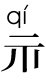
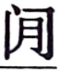

史记卷一百二十九
货殖列传第六十九
老子 曰：“至治之极，邻国相望，鸡狗之声相闻，民各甘其食，美其服，安其俗，乐其业，至老死不相往来。”必用此为务，挽近世涂民耳目，则几无行矣。
太史公 曰：夫神农 以前，吾不知已。至若诗书 所述虞夏 以来，耳目欲极声色之好，口欲穷刍豢之味，身安逸乐，而心夸矜势能之荣。使俗之渐民久矣，虽户说以眇论，终不能化。故善者因之，其次利道之，其次教诲之，其次整齐之，最下者与之争。
夫山西
饶材、竹、榖、 、旄、玉石；山东
多鱼、盐、漆、丝、声色；江南
出柟、梓、姜、桂、金、锡、连、丹沙、犀、玳瑁、珠玑、齿革；龙门
、碣石
北多马、牛、羊、旃裘、筋角；铜、铁则千里往往山出棋置：此其大较也。皆中国人民所喜好，谣俗被服饮食奉生送死之具也。故待农而食之，虞而出之，工而成之，商而通之。此宁有政教发征期会哉？人各任其能，竭其力，以得所欲。故物贱之征贵，贵之征贱，各劝其业，乐其事，若水之趋下，日夜无休时，不召而自来，不求而民出之。岂非道之所符，而自然之验邪？
、旄、玉石；山东
多鱼、盐、漆、丝、声色；江南
出柟、梓、姜、桂、金、锡、连、丹沙、犀、玳瑁、珠玑、齿革；龙门
、碣石
北多马、牛、羊、旃裘、筋角；铜、铁则千里往往山出棋置：此其大较也。皆中国人民所喜好，谣俗被服饮食奉生送死之具也。故待农而食之，虞而出之，工而成之，商而通之。此宁有政教发征期会哉？人各任其能，竭其力，以得所欲。故物贱之征贵，贵之征贱，各劝其业，乐其事，若水之趋下，日夜无休时，不召而自来，不求而民出之。岂非道之所符，而自然之验邪？
周书 曰：“农不出则乏其食，工不出则乏其事，商不出则三宝绝，虞不出则财匮少。”财匮少而山泽不辟矣。此四者，民所衣食之原也。原大则饶，原小则鲜。上则富国，下则富家。贫富之道，莫之夺予，而巧者有馀，拙者不足。故太公望 封于营丘 ，地潟卤，人民寡，于是太公 劝其女功，极技巧，通鱼盐，则人物归之， 至而辐凑。故齐 冠带衣履天下，海岱 之间敛袂而往朝焉。其后齐 中衰，管子 修之，设轻重九府，则桓公 以霸，九合诸侯，一匡天下；而管氏 亦有三归，位在陪臣，富于列国之君。是以齐 富强至于威 、宣 也。
故曰：“仓廪实而知礼节，衣食足而知荣辱。”礼生于有而废于无。故君子富，好行其德；小人富，以适其力。渊深而鱼生之，山深而兽往之，人富而仁义附焉。富者得势益彰，失势则客无所之，以而不乐。夷狄益甚。
谚曰：“千金之子，不死于市。”此非空言也。故曰：“天下熙熙，皆为利来；天下壤壤，皆为利往。”夫千乘之王，万家之侯，百室之君，尚犹患贫，而况匹夫编户之民乎！
昔者越王句践 困于会稽 之上，乃用范蠡 、计然 。计然 曰：“知斗则修备，时用则知物，二者形则万货之情可得而观已。故岁在金，穰；水，毁；木，饥；火，旱。旱则资舟，水则资车，物之理也。六岁穰，六岁旱，十二岁一大饥。夫粜，二十病农，九十病末。末病则财不出，农病则草不辟矣。上不过八十，下不减三十，则农末俱利，平粜齐物，关市不乏，治国之道也。积著之理，务完物，无息币。以物相贸，易腐败而食之货勿留，无敢居贵。论其有馀不足，则知贵贱。贵上极则反贱，贱下极则反贵。贵出如粪土，贱取如珠玉。财币欲其行如流水。”修之十年，国富，厚赂战士，士赴矢石，如渴得饮，遂报强吴 ，观兵中国，称号“五霸”。
范蠡 既雪会稽 之耻，乃喟然而叹曰：“计然 之策七，越 用其五而得意。既已施于国，吾欲用之家。”乃乘扁舟浮于江湖，变名易姓，适齐 为鸱夷子皮 ，之陶 为朱公 。朱公 以为陶 天下之中，诸侯四通，货物所交易也。乃治产积居，与时逐而不责于人。故善治生者，能择人而任时。十九年之中三致千金，再分散与贫交疏昆弟。此所谓富好行其德者也。后年衰老而听子孙，子孙修业而息之，遂至巨万。故言富者皆称陶朱公 。
子赣 既学于仲尼 ，退而仕于卫 ，废著鬻财于曹 、鲁 之间，七十子之徒，赐 最为饶益。原宪 不厌糟糠，匿于穷巷。子贡 结驷连骑，束帛之币以聘享诸侯，所至，国君无不分庭与之抗礼。夫使孔子 名布扬于天下者，子贡 先后之也。此所谓得势而益彰者乎？
白圭 ，周 人也。当魏文侯 时，李克 务尽地力，而白圭 乐观时变，故人弃我取，人取我与。夫岁孰取谷，予之丝漆；茧出取帛絮，予之食。太阴在卯，穰；明岁衰恶。至午，旱；明岁美。至酉，穰；明岁衰恶。至子，大旱；明岁美，有水。至卯，积著率岁倍。欲长钱，取下谷；长石斗，取上种。能薄饮食，忍嗜欲，节衣服，与用事僮仆同苦乐，趋时若猛兽挚鸟之发。故曰：“吾治生产，犹伊尹 、吕尚 之谋，孙吴 用兵，商鞅 行法是也。是故其智不足与权变，勇不足以决断，仁不能以取予，强不能有所守，虽欲学吾术，终不告之矣。”盖天下言治生祖白圭 。白圭 其有所试矣，能试有所长，非苟而已也。
猗顿 用盬盐起。而邯郸郭纵 以铁冶成业，与王者埒富。
乌氏倮 畜牧，及众，斥卖，求奇绘物，间献遗戎王 。戎王 什倍其偿，与之畜，畜至用谷量马牛。秦始皇帝 令倮 比封君，以时与列臣朝请。而巴 寡妇清 ，其先得丹穴，而擅其利数世，家亦不訾。清 ，寡妇也，能守其业，用财自卫，不见侵犯。秦皇帝 以为贞妇而客之，为筑女怀清台 。夫倮 鄙人牧长，清穷乡寡妇，礼抗万乘，名显天下，岂非以富邪？
汉 兴，海内为一，开关梁，弛山泽之禁，是以富商大贾周流天下，交易之物莫不通，得其所欲，而徙豪杰诸侯强族于京师。
关中 自汧 、雍 以东至河 、华 ，膏壤沃野千里，自虞夏 之贡以为上田，而公刘 适邠，大王 、王季 在岐 ，文王 作丰 ，武王 治镐 ，故其民犹有先王之遗风，好稼穑，殖五谷，地重，重为邪。及秦文 、德 、缪 居雍 ，隙陇蜀 之货物而多贾。献公 徙栎邑 ，栎邑 北却戎翟，东通三晋 ，亦多大贾。孝 、昭 治咸阳 ，因以汉 都，长安 诸陵，四方辐凑并至而会，地小人众，故其民益玩巧而事末也。南则巴蜀 。巴蜀 亦沃野，地饶卮、姜、丹沙、石、铜、铁、竹、木之器。南御滇僰 ，僰 僮。西近邛笮 ，笮 马、旄牛。然四塞，栈道千里，无所不通，唯褒斜 绾毂其口，以所多易所鲜。天水 、陇西 、北地 、上郡 与关中 同俗，然西有羌中 之利，北有戎翟 之畜，畜牧为天下饶。然地亦穷险，唯京师要其道。故关中 之地，于天下三分之一，而人众不过什三；然量其富，什居其六。
昔唐
人都河东
，殷
人都河内
，周
人都河南。夫三河
在天下之中，若鼎足，王者所更居也，建国各数百千岁，土地小狭，民人众，都国诸侯所聚会，故其俗纤俭习事。杨
、平阳
陈西贾秦
、翟
，北贾種
、代
。種
、代
，石
北也，地边胡
，数被寇。人民矜懻忮，好气，任侠为奸，不事农商。然迫近北夷，师旅亟往，中国委输时有奇羡。其民羯姨不均，自全晋
之时固已患其僄悍，而武灵王
益厉之，其谣俗犹有赵
之风也。故杨
、平阳
陈掾其间，得所欲。温
、轵
西贾上党
，北贾赵
、中山
。中山
地薄人众，犹有沙丘纣
淫地馀民，民俗儇急，仰机利而食。丈夫相聚游戏，悲歌忼慨，起则相随椎剽，休则掘冢作巧奸冶，多美物，为倡优。女子则鼓鸣瑟， 屣，游媚贵富，人后宫，遍诸侯。
屣，游媚贵富，人后宫，遍诸侯。
然邯郸 亦漳 、河 之间一都会也。北通燕 、涿 ，南有郑 、卫 。郑 、卫 俗与赵 相类，然近梁 、鲁 ，微重而矜节。濮上 之邑徙野王 ，野王 好气任侠，卫 之风也。
夫燕 亦勃 、碣 之间一都会也。南通齐 、赵 ，东北边胡 。上谷 至辽东 ，地踔远，人民希，数被寇，大与赵 、代 俗相类，而民雕捍少虑，有鱼盐枣栗之饶。北邻乌桓 、夫馀 ，东绾秽貉 、朝鲜 、真番 之利。
洛阳 东贾齐 、鲁 ，南贾梁 、楚 。故泰山 之阳则鲁 ，其阴则齐 。
齐 带山海，膏壤千里，宜桑麻，人民多文彩布帛鱼盐。临菑 亦海岱 之间一都会也。其俗宽缓阔达，而足智，好议论，地重，难动摇，怯于众斗，勇于持刺，故多劫人者，大国之风也。其中具五民。
而邹 、鲁 滨洙 、泗 ，犹有周公 遗风，俗好儒，备于礼，故其民龊龊。颇有桑麻之业，无林泽之饶。地小人众，俭啬，畏罪远邪。及其衰，好贾趋利，甚于周 人。
夫自鸿沟 以东，芒 、砀 以北，属巨野 ，此梁 、宋 也。陶 、睢阳 亦一都会也。昔尧 作于成阳 ，舜 渔于雷泽 ，汤 止于亳 。其俗犹有先王遗风，重厚多君子，好稼穑，虽无山川之饶，能恶衣食，致其蓄藏。
越 、楚 则有三俗。夫自淮北沛 、陈 、汝南 、南郡 ，此西楚 也。其俗剽轻，易发怒，地薄，寡于积聚。江陵 故郢都 ，西通巫 、巴 ，东有云梦 之饶。陈 在楚夏 之交，通鱼盐之货，其民多贾。徐 、僮 、取虑 ，则清刻，矜己诺。
彭城 以东，东海 、吴 、广陵 ，此东楚 也。其俗类徐 、僮 。朐 、缯 以北，俗则齐 。浙江 南则越 。夫吴 自阖庐 、春申 、王濞 三人招致天下之喜游子弟，东有海盐之饶，章山 之铜，三江 、五湖 之利，亦江东 一都会也。
衡山 、九江 、江南 、豫章 、长沙 ，是南楚 也，其俗大类西楚 。郢 之后徙寿春 ，亦一都会也。而合肥 受南北潮，皮革、鲍、木输会也。与闽中 、干越 杂俗，故南楚 好辞，巧说少信。江南 卑湿，丈夫早夭。多竹木。豫章 出黄金，长沙 出连、锡，然堇堇物之所有，取之不足以更费。九疑 、苍梧 以南至儋耳 者，与江南 大同俗，而杨越 多焉。番禺 亦其一都会也，珠玑、犀、玳瑁、果、布之凑。
颍川 、南阳 ，夏 人之居也。夏 人政尚忠朴，犹有先王之遗风。颍川 敦愿。秦 末世，迁不轨之民于南阳 。南阳 西通武关 、郧关 ，东南受汉 、江 、淮 。宛 亦一都会也。俗杂好事，业多贾。其任侠，交通颍川 ，故至今谓之“夏 人”。
夫天下物所鲜所多，人民谣俗，山东 食海盐，山西 食盐卤，领南 、沙北 固往往出盐，大体如此矣。
总之，楚越 之地，地广人希，饭稻羹鱼，或火耕而水耨，果隋蠃蛤，不待贾而足，地势饶食，无饥馑之患，以故呰窳偷生，无积聚而多贫。是故江 、淮 以南，无冻饿之人，亦无千金之家。沂 、泗水 以北，宜五谷桑麻六畜，地小人众，数被水旱之害，民好畜藏，故秦 、夏 、梁 、鲁 好农而重民。三河 、宛 、陈 亦然，加以商贾。齐 、赵 设智巧，仰机利。燕 、代 田畜而事蚕。
由此观之，贤人深谋于廊庙，论议朝廷，守信死节隐居岩穴之士设为名高者安归乎？归于富厚也。是以廉吏久，久更富，廉贾归富。富者，人之情性，所不学而俱欲者也。故壮士在军，攻城先登，陷阵却敌，斩将搴旗，前蒙矢石，不避汤火之难者，为重赏使也。其在闾巷少年，攻剽椎埋，劫人作奸，掘冢铸币，任侠并兼，借交报仇，篡逐幽隐，不避法禁，走死地如骛者，其实皆为财用耳。今夫赵 女郑 姬，设形容，揳鸣琴，揄长袂，蹑利屣，目挑心招，出不远千里，不择老少者，奔富厚也。游闲公子，饰冠剑，连车骑，亦为富贵容也。弋射渔猎，犯晨夜，冒霜雪，驰坑谷，不避猛兽之害，为得味也。博戏驰逐，斗鸡走狗，作色相矜，必争胜者，重失负也。医方诸食技术之人，焦神极能，为重糈也。吏士舞文弄法，刻章伪书，不避刀锯之诛者，没于赂遗也。农工商贾畜长，固求富益货也。此有知尽能索耳，终不馀力而让财矣。
谚曰：“百里不贩樵，千里不贩籴。”居之一岁，种之以谷；十岁，树之以木；百岁，来之以德。德者，人物之谓也。今有无秩禄之奉，爵邑之入，而乐与之比者，命曰“素封”。封者食租税，岁率户二百。千户之君则二十万，朝觐聘享出其中。庶民农工商贾，率亦岁万息二千，百万之家则二十万，而更徭租赋出其中。衣食之欲，恣所好美矣。故曰陆地牧马二百蹄，牛蹄角千，千足羊，泽中千足彘，水居千石鱼陂，山居千章之材。安邑 千树枣；燕 、秦 千树栗；蜀 、汉 、江陵 千树橘；淮北 、常山 已南，河济 之间千树萩；陈 、夏 千亩漆；齐 、鲁 千亩桑麻；渭川 千亩竹；及名国万家之城，带郭千亩亩钟之田，若千亩卮茜，千畦姜韭：此其人皆与千户侯等。然是富给之资也，不窥市井，不行异邑，坐而待收，身有处士之义而取给焉。若至家贫亲老，妻子软弱，岁时无以祭祀进醵，饮食被服不足以自通，如此不惭耻，则无所比矣。是以无财作力，少有斗智，既饶争时，此其大经也。今治生不待危身取给，则贤人勉焉。是故本富为上，末富次之，奸富最下。无岩处奇士之行，而长贫贱，好语仁义，亦足羞也。
凡编户之民，富相什则卑下之，伯则畏惮之，千则役，万则仆，物之理也。夫用贫求富农不如工，工不如商，刺绣文不如倚市门，此言末业，贫者之资也。通邑大都，酤一岁千酿，醯酱千瓨，浆千甔，屠牛羊彘千皮，贩谷粜千钟，薪稿千车，船长千丈，木千章，竹竿万个，其轺车百乘，牛车千两，木器髤者千枚，铜器千钧，素木铁器若卮茜千石，马蹄躈千，牛千足，羊彘千双，僮手指千，筋角丹沙千斤，其帛絮细布千钧，文采千匹，榻布皮革千石，漆千斗，蘖曲盐豉千荅，鲐 千斤，鲰千石，鲍千钧，枣栗千石者三之，
狐鼦裘千皮，羔羊裘千石，旃席千具，佗果菜千钟，子贷金钱千贯，节驵会，贪贾三之，廉贾五之，此亦比千乘之家，其大率也。佗杂业不中什二，则非吾财也。
千斤，鲰千石，鲍千钧，枣栗千石者三之，
狐鼦裘千皮，羔羊裘千石，旃席千具，佗果菜千钟，子贷金钱千贯，节驵会，贪贾三之，廉贾五之，此亦比千乘之家，其大率也。佗杂业不中什二，则非吾财也。
请略道当世千里之中，贤人所以富者，令后世得以观择焉。
蜀卓氏 之先，赵 人也，用铁冶富。秦 破赵 ，迁卓氏 。卓氏 见虏略，独夫妻推辇，行诣迁处。诸迁虏少有馀财，争与吏，求近处，处葭萌 。唯卓氏 曰：“此地狭薄。吾闻汶山 之下，沃野，下有蹲鸱，至死不饥。民工于市，易贾。”乃求远迁。致之临邛 ，大喜，即铁山鼓铸，运筹策，倾滇蜀 之民，富至僮千人。田池射猎之乐，拟于人君。
程郑 ，山东 迁虏也，亦冶铸，贾椎髻之民，富埒卓氏 ，俱居临邛 。
宛孔氏 之先，梁 人也，用铁冶为业。秦 伐魏 ，迁孔氏南阳 。大鼓铸，规陂池，连车骑，游诸侯，因通商贾之利，有游闲公子之赐与名。然其赢得过当，愈于纤啬，家致富数千金，故南阳 行贾尽法孔氏 之雍容。
鲁 人俗俭啬，而曹邴氏 尤甚，以铁冶起，富至巨万。然家自父兄子孙约，俯有拾，仰有取，贳贷行贾遍郡国。邹 、鲁 以其故多去文学而趋利者，以曹邴氏 也。
齐 俗贱奴虏，而刀 独爱贵之。桀黠奴，人之所患也，唯刀 收取，使之逐渔盐商贾之利，或连车骑，交守相，然愈益任之。终得其力，起富数千万。故曰“宁爵毋刀 ”，言其能使豪奴自饶而尽其力。
周 人既纤，而师史 尤甚，转毂以百数，贾郡国，无所不至。洛阳 街居在齐秦楚赵 之中，贫人学事富家，相矜以久贾，数过邑不入门，设任此等，故师史 能致七千万。
宣曲任氏 之先，为督道 仓吏。秦 之败也，豪杰皆争取金玉，而任氏 独窖仓粟。楚汉 相距荥阳 也，民不得耕种，米石至万，而豪杰金玉尽归任氏 ，任氏 以此起富。富人争奢侈，而任氏 折节为俭，力田畜。田畜人争取贱贾，任氏 独取贵善。富者数世。然任公 家约，非田畜所出弗衣食，公事不毕则身不得饮酒食肉。以此为闾里率，故富而主上重之。
塞之斥也，唯桥姚 已致马千匹，牛倍之，羊万头，粟以万钟计。吴楚 七国兵起时，长安 中列侯封君行从军旅，赍贷子钱，子钱家以为侯邑国在关东 ，关东 成败未决，莫肯与。唯无盐氏 出捐千金贷，其息什之。三月，吴楚 平。一岁之中，则无盐氏 之息什倍，用此富埒关中 。
关中 富商大贾，大抵尽诸田 ，田啬 、田兰 。韦家栗氏 ，安陵 、杜杜氏 ，亦 巨万。
此其章章尤异者也。皆非有爵邑奉禄弄法犯奸而富，尽椎埋去就，与时俯仰，获其赢利，以末致财，用本守之，以武一切，用文持之，变化有概，故足术也。若至力农畜，工虞商贾，为权利以成富，大者倾郡，中者倾县，下者倾乡里者，不可胜数。
夫纤啬筋力，治生之正道也，而富者必用奇胜。田农，掘业，而秦扬 以盖一州。掘冢，奸事也，而田叔 以起。博戏，恶业也，而桓发 用富。行贾，丈夫贱行也，而雍乐成 以饶。贩脂，辱处也，而雍伯 千金。卖浆，小业也，而张氏 千万。洒削，薄技也，而郅氏 鼎食。胃脯，简微耳，濁氏 连骑。马医，浅方，张里 击钟。此皆诚壹之所致。
由是观之，富无经业，则货无常主，能者辐凑，不肖者瓦解。千金之家比一都之君，巨万者乃与王者同乐。岂所谓“素封”者邪？非也？